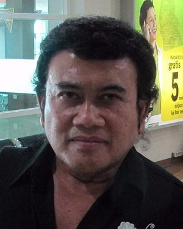

Naik panggung
Olla Ramlan
Aktris, presenter
Jadi pembawa acara (MC) kampanye akbar AMIN di Jakarta International Stadium (JIS).
10 Februari 2024 · Bisnis.com
Tiga paslon, satu pemilu, dan banyak wajah yang kamu kenal dari layar kaca. Ini siapa ngapain di 2024, lengkap sama berita sumbernya.
Hey, Senayan-ers. Bintang layar favorit kalian sibuk banget musim kampanye kemarin. Spotted: jadi MC, deklarasi, sampai duduk di barisan depan, buat ketiga paslon. Receipts included.
Catatan aktor dan aktris yang terbuka mendukung salah satu dari tiga paslon di 2024: apa yang mereka lakukan, kapan, dan berita sumbernya.
Mendukung calon itu hal biasa dan sah. Ini catatan, bukan penilaian, dan ketiga paslon diperlakukan sama.
Urutan sesuai nomor paslon. Nama lebih banyak bukan berarti lebih populer: ini cuma menghitung yang diberitakan.
Aktris, presenter
Jadi pembawa acara (MC) kampanye akbar AMIN di Jakarta International Stadium (JIS).
10 Februari 2024 · Bisnis.com

Penyanyi dangdut, aktor film
Menyatakan dukungan di acara di JIExpo Kemayoran, Jakarta; Anies dan Muhaimin ikut berjoget di panggung bersamanya.
29 Januari 2024 · Tempo
Aktris, caleg NasDem
Mengumumkan dukungan untuk Anies–Muhaimin lewat akun TikTok-nya.
Komedian, presenter, aktor
Diumumkan Timnas AMIN sebagai pengisi acara kampanye akbar di JIS (jadwal, belum ada laporan tampil).
10 Februari 2024 · RMOL
Komedian, aktor
Diumumkan Timnas AMIN sebagai pengisi acara kampanye akbar di JIS (jadwal). Pada 2019 ia juru kampanye resmi Prabowo–Sandiaga.
10 Februari 2024 · RMOL
Aktris, politisi Golkar
Masuk Tim Kampanye Nasional (TKN), disebut sebagai komandan komunikasi.
7 November 2023 · Bloomberg Technoz
Aktor
Wakil komandan pemilih muda di TKN; maju caleg dari PAN dan kemudian terpilih ke DPR.
7 November 2023 · Bloomberg Technoz
Aktor
Bergabung dengan TKN Prabowo–Gibran. Pada 2019 ia juru kampanye resmi Prabowo–Sandiaga.
Aktor, presenter
Salah satu MC kampanye akbar di Gelora Bung Karno (GBK).
10 Februari 2024 · detik
Komedian, aktor
Memandu acara konsolidasi di Sentul (10 Des 2023) dan jadi MC kampanye akbar di GBK.
10 Februari 2024 · detik
Komedian, aktor
Memandu acara konsolidasi pemenangan Prabowo–Gibran di Sentul.
10 Desember 2023 · RM.id
Komedian, presenter, aktor
Salah satu MC kampanye akbar di GBK.
10 Februari 2024 · detik
Aktor, Mang Uu di Preman Pensiun
Ikut deklarasi dukungan bersama 10 perguruan silat di Kabupaten Bandung.
21 Januari 2024 · ANTARA
Aktor, Kang Jamal di Preman Pensiun
Ikut deklarasi yang sama di Kabupaten Bandung.
21 Januari 2024 · ANTARA
Aktris, mantan kader PDIP
Duduk di barisan depan pendukung Prabowo–Gibran pada debat capres pertama.
12 Desember 2023 · Suara
Aktris
Naik ke panggung kampanye akbar di GBK.
10 Februari 2024 · CNBC Indonesia
Aktris sinetron
Tampil di panggung kampanye akbar di GBK.
10 Februari 2024 · CNBC Indonesia
Aktris, presenter
Ikut berbagai acara kampanye bersama Raffi Ahmad (tanggal tidak disebut).
Aktor
Hadir di kampanye akbar GBK.
10 Februari 2024 · CNBC Indonesia
Aktor senior
Hadir di kampanye akbar GBK.
10 Februari 2024 · CNBC Indonesia
Aktor (Si Doel), politisi PDIP
Ditunjuk sebagai Ketua Tim Pemenangan Daerah (TPD) Ganjar–Mahfud di Banten.
Aktor, caleg PDIP
Juru kampanye resmi di Tim Pemenangan Nasional (TPN).
29 November 2023 · Bisnis.com
Komedian, aktor, caleg PDIP
Juru kampanye resmi di TPN.
29 November 2023 · Bisnis.com
Aktor
Sebagai Ketua Gabungan Seniman Indonesia (GSI), mendeklarasikan dukungan untuk Ganjar sebagai presiden di Stadion Gelora Delta, Sidoarjo.
10 Juni 2023 · detik
Sebagian wajah ini juga ikut kampanye di pemilu sebelumnya. Ada yang tetap, ada yang pindah. Dua-duanya biasa.
Foto berlisensi bebas dari Wikimedia Commons, sebagian dipotong. Foto berasal dari berbagai tahun dan sumber. Foto yang tidak ada berarti kami belum menemukan yang berlisensi bebas, tidak lebih.
Disusun 31 Oktober 2026 dari berita yang ditautkan di setiap kartu.